肠道菌群&代谢物&脂肪肝癌变
原文：https://mp.weixin.qq.com/s?__biz=MzAwMzIzOTk5OQ==&mid=2247499735&idx=2&sn=c0d907c36bd8fb754091ddb2cad3530d&chksm=9b3c8687ac4b0f9172be29feeb168e6d801a536428c4ab381e218e10998457f0a72f3023a1d6#rd 合集：文献速递
编者推荐
今天分享的是一篇于2021年发表在 Gut 的文献，题目是 Dietary cholesterol drives fatty liver-associated liver cancer by modulating gut microbiota and metabolites (doi:10.1136/gutjnl-2019-319664) 作者是来自香港中文大学消化道疾病研究国家重点实验室的Xiang Zhang、Olabisi Oluwabukola Coker等，通讯作者为于君教授。于君教授团队专注于消化道肿瘤和非酒精性脂肪肝（NAFLD）的发生发展机制、肠道微生态以及菌群与宿主的相互作用机制。本人有幸于去年夏天在玄武湖畔听过于老师的学术汇报。在本文中，该团队使用了16S rDNA 测序（原文16S rRNA，本文统一为16S rDNA）、 液-质联用等技术手段探索了高脂高胆固醇饲料喂养的肝癌小鼠模型与肠道菌群、菌群代谢物的关系，并使用无菌小鼠和降胆固醇药物干预进行验证。这项研究表明，降胆固醇药物以及对肠道菌群的干预具有防治脂肪肝癌变的潜能，对癌症的预防提供了一种新的思路。
doi:
10.1136/gutjnl-2019-319664
链接：
https://gut.bmj.com/content/70/4/761.long
New findings (主要发现)
● 长期的高脂高胆固醇饮食（HFHC）能够自发性诱导雄性小鼠肝脏由脂肪肝、脂肪性肝炎向肝纤维化以及原发性肝癌的渐次发展，而高脂低胆固醇饮食（HFLC）最多仅造成脂肪型肝炎。
● 膳食胆固醇造成的脂肪肝肝癌（NAFLD-HCC）的形成与肠道菌群紊乱相关。在肝癌形成的不同阶段中，菌群组成发生了变化：Mucispirillum、Desulfovibrio、Anaerotruncus与Desulfovibrionaceae呈阶段性增长，而Bifidobacterium和Bacteroides在喂养HFHC的小鼠中减少。这一变化趋势在高胆固醇血症患者队列中得到了证实。
● 在NAFLD-HCC模型中，来源于肠道菌群的代谢物含量出现了变化，比如血清中牛黄胆酸（TCA）的上升与3-吲哚丙酸（IPA）的减少。 IPA能够抑制胆固醇诱导的肝脏脂质堆积与细胞增生，而TCA处理人源干细胞系则加剧了胆固醇诱导的甘油三酯堆积。
● 将HFHC小鼠的粪便移植给无菌小鼠，受体小鼠出现了与供体小鼠一致的表型，如肝脏的直至堆积、炎症与细胞增生等。
● 降胆固醇药物治疗缓解了膳食胆固醇导致的肠道菌群紊乱，并彻底阻止了NAFLD-HCC的形成。
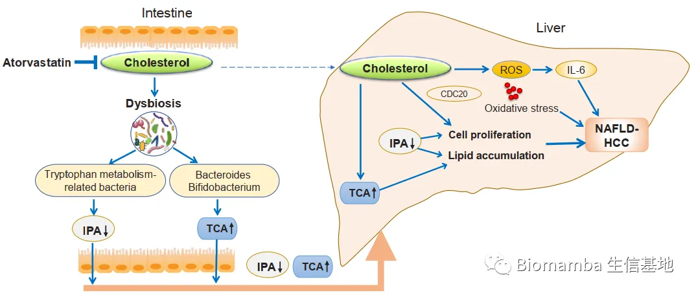
Design (实验设计)
****●1 对C57BL/6雄性小鼠喂养14个月 的HFHC、HFLC或普通饲料（NC）。
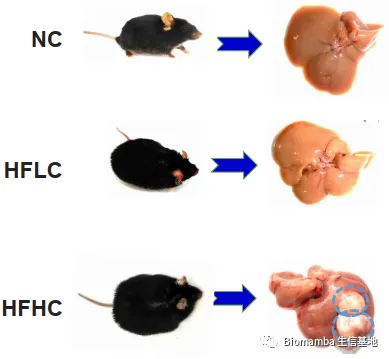
** **
●2 对喂养HFHC的小鼠给予降胆固醇药物阿托伐他汀 干预（Fig 7A）。
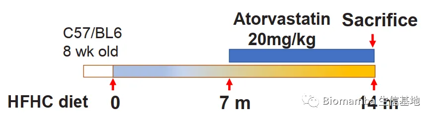
****●3 将不同饮食条件下的小鼠粪便移植 给无菌小鼠（Fig 6A），探索NAFLD-HCC模型下肠道菌群的直接影响。
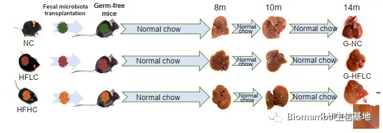
**● 4 **使用16S rDNA测序技术、液-质联用代谢组学技术分别分析肠道菌群和血清代谢物。
● 5 检测59名高胆固醇血症患者、39名健康志愿者的粪便菌群组成。
Results (实验结果)
● 1 长期的HFHC喂养导致了NFLD-HCC的发生与发展
● 作者首先使用了HFHC、HFLC和NC喂养雄性小鼠，使用苏木素-伊红（H&E）染色、天狼星红染色（Sirius red）以及对甲胎蛋白（AFP）和高尔基体蛋白（GP73）的免疫组化染色检测小鼠肝脏的病理进程。同时通过核磁成像（MRI）、细胞核内分裂增殖相关蛋白Ki-67的免疫组化以及其他检测证实长期的HFHC喂养导致了 NAFLD-HCC 的发生与发展，再结合HFLC的实验结果，说明膳食胆固醇在癌症的发展中具有关键作用。
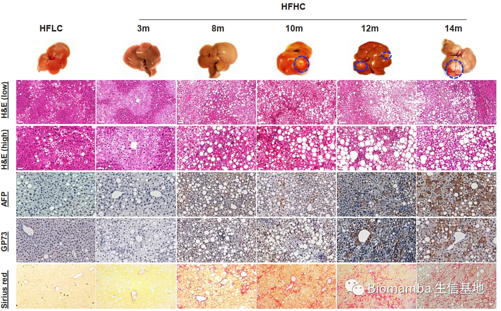
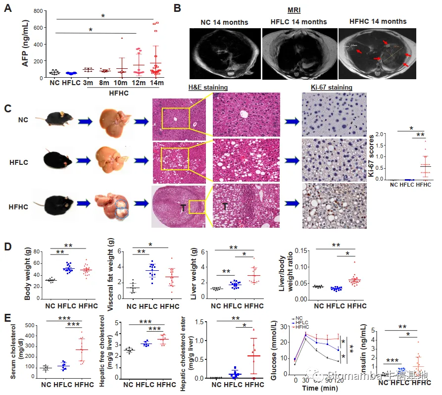
**● 2 **特征膳食胆固醇造成了肠道菌群的紊乱
● 为探索肠道菌群是否参与了膳食胆固醇诱导NAFLD-HCC的形成，作者对HFHC和HFLC组小鼠造模终点的粪便进行了16S rDNA测序。多样性分析显示，HFHC组的Shannon指数下降，Chao1指数上升，说明HFHC造成了小鼠肠道菌群丰富度的提升与均匀度的下降，即膳食胆固醇增加了肠道菌群的物种种类，同时加剧了物种的不均匀分布。另外，基于加权Unifrac距离矩阵的主坐标分析（Principal Coordinate Analysis, PCoA）结果显示HFHC组与HFLC组样本未重叠，表明胆固醇的摄入造成了小鼠肠道菌群结构的明显差异。热图展示了两组间的部分差异OTU，如 Mucispirillum schaedleri_Otu038、Desulfovibrio_Otu047、 Anaerotruncus_Otu107、Desulfovibrionaceae_Otu073 。PICRUST预测的结果显示HFHC组的色氨酸代谢（Tryptophan metabolism）能力下调，预示胆固醇的摄入造成了肠道菌群代谢功能的变化。
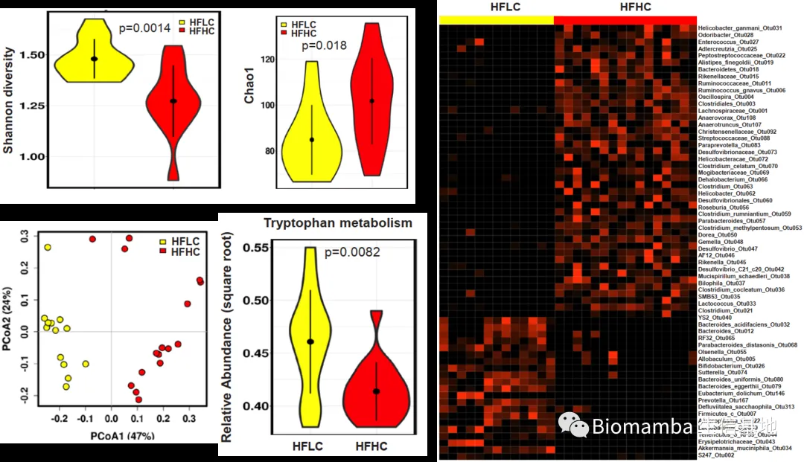
● 在HFHC喂养过程中，研究者还发现肠道菌群的丰富度随时间推移而逐渐上升（Chao1指数上升）。此外，PCoA与冗余分析（Redundancy analysis, RDA）的结果表明菌群结构也出现了变化， Mucispirillum schaedleri_Otu038、Desulfovibrio_Otu047、 Anaerotruncus_Otu107、Desulfovibrionaceae_Otu073 的含量随时间逐渐升高。
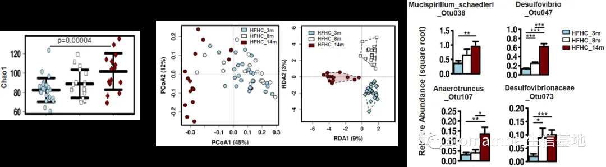
● 为确认菌群丰度与小鼠表型之间的联系，研究者计算了二者之间的相关性系数，发现 Mucispirillum schaedleri_Otu038、Desulfovibrio_Otu047、 Anaerotruncus_Otu107、Desulfovibrionaceae_Otu073 等在HFHC组小鼠中富集的微生物与血清、肝的胆固醇含量正相关，而 Bifidobacterium_Otu026、B. acidifaciens_Otu032、B. uniformis_Otu080、A. municiphila_Otu034 等减少的微生物与这些指标负相关。这说明HFHC造成的微生物紊乱和胆固醇水平相关。
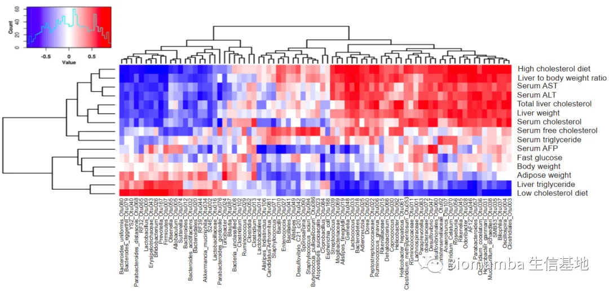
● 为了验证动物实验的结果，研究者在高胆固醇血症患者队列 （59名患者，39名健康受试者）中进行验证。将宏基因组 鉴定的属水平分类单元的相对丰度与血清生化指标进行相关性分析，发现 Bifidobacterium、Bacteroides 与血清总胆固醇 （TCHO）、低密度脂蛋白（LDL）负相关，但与高密度脂蛋白（HDL）正相关。这与动物实验的结果一致，说明肠道菌群参与了膳食胆固醇导致的相关病变。
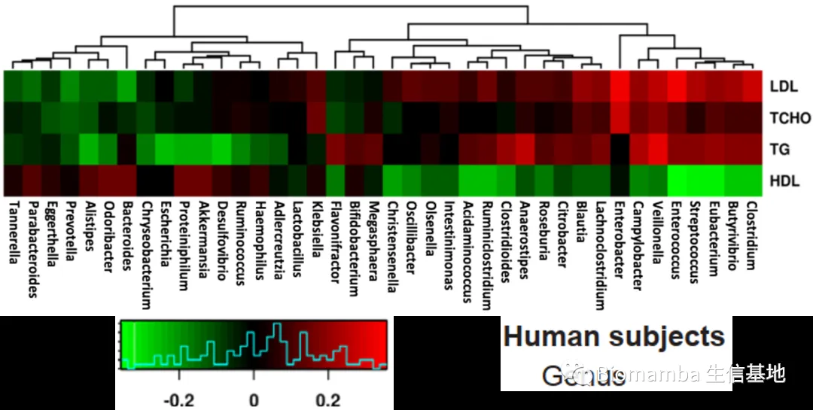
**● 3 **膳食胆固醇引起了小鼠血清代谢组的变化
● 本研究接下来使用了代谢组学技术检测小鼠血清的代谢物。主成分分析（Principal Component Analysis, PCA）显示HFHC组与HFLC组样本差异性较高，富集分析的结果显示HFHC组的胆汁酸合成通路出现富集，牛黄胆酸（taurocholic acid,TCA）、牛黄熊去氧胆酸（tauroursodeoxycholic acid, TUDCA）、 甘胆酸（glycocholic acid, GCA）等初级胆汁酸在HFHC组上升，而一种菌源色氨酸代谢物——3-吲哚丙酸（3-indolepropionic acid, IPA）下降。这提示肠道菌群可能影响了胆固醇引起的血清代谢物变化。
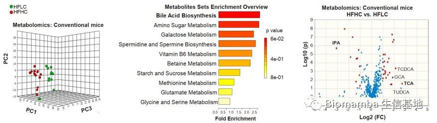
● 对差异代谢物与肠道微生物进行相关性分析，结果显示 在HFHC组上升的 Mucispirillum schaedleri_Otu038 与 TUDCA、TCDCA、TCA以及GCA正相关； Roseburia_Otu056 和 Helicobacter_ganmanii_Otu031 与TUDCA、TCDCA正相关； Anaerotruncus_Otu107 与IPA负相关。
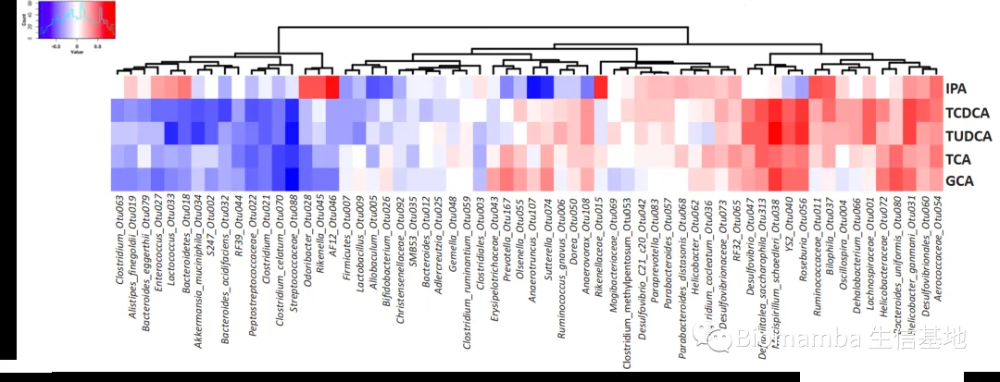
● 研究者随后进行了药物与细胞的共培养，证实了TCA能够加剧人源LO2细胞系在胆固醇诱导后的甘油三酯堆积，而IPA可以抑制NASH-HCC细胞系HKCI-2、HKCI-10的甘油三酯堆积和细胞增生。
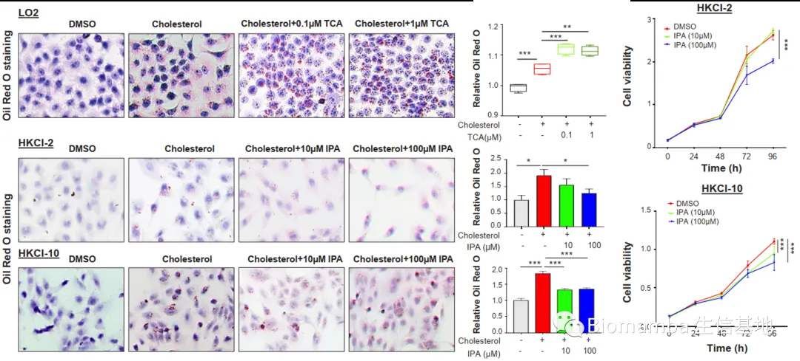
● 4 高胆固醇饮食塑造的肠道菌群能够诱导无菌小鼠的肝脏细胞增殖
● 为验证胆固醇调节的菌群对NAFLD-HCC的影响，研究者将NC、HFLC、HFHC组小鼠的粪便移植给了无菌小鼠。H&E与免疫组化的结果显示，移植了HFHC组粪便的无菌小鼠（G-HFHC）肝脏出现了炎性细胞的浸润和聚集。此外，肿瘤信号通路PCR阵列发现与细胞增殖、血管生成、肿瘤侵袭/转移相关的基因上调，凋亡相关基因出现下降。NMDS与PCA的结果显 示，G-HFHC组小鼠粪便菌群结构与HFHC组更为接近，与G-NC组、G-HFLC组具有较大差异，也出现了上升的 Desulfovibrionaceae、Mucispirillum、Desulfovibrio、Anaerotruncus 等。同时，这一组的血清中同样出现了下降的IPA以及上升的TCA。这些结果说明膳食胆固醇塑造的微生物能够诱发代谢物的变化，进而NAFLD与肝细胞增殖，促进胆固醇诱导的NAFLD-HCC形成。
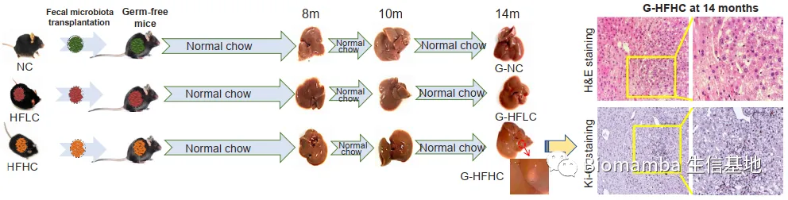
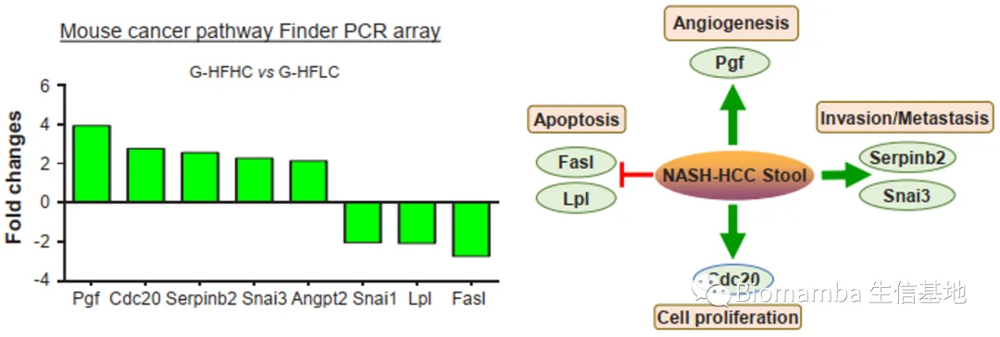
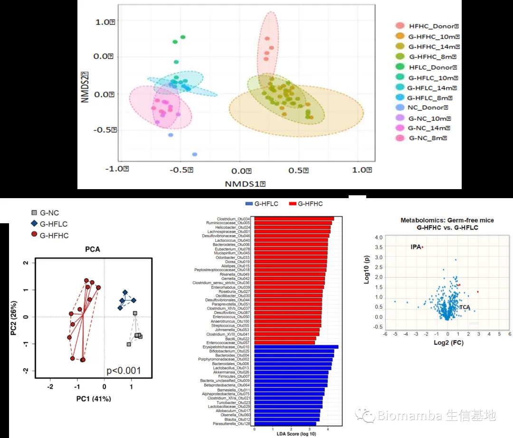
● 5 胆固醇的抑制可以阻止HFHC小鼠的NAFLD-HCC进程
● 鉴于膳食胆固醇驱动了NAFLD-HCC的病程发展，研究者使用了阿托伐他汀探索降胆固醇药物是否能够组织NAFLD以及向HCC的发展。给药7个月之后，给药的HFHC组小鼠（HFHC+At）粪便的菌群物种丰富度出现回调，同时 Mucispirillum schaedleri_Otu038、 Desulfovibrio_Otu047、Anaerotruncus_Otu107、Desulfovibrionaceae_Otu073 的丰度也出现了逆转。同时阿托伐他汀能够阻止HFHC诱导的NAFLD-HCC形成，而移植了HFHC+At组小鼠粪便的无菌小鼠肝脏病理条件出现改善，甘油三酯堆积和脂质过氧化现象好转。此外，阿托伐他汀还引起了HFHC组小鼠血清IPA的上升和TCA的下降。这些现象进一步说明了肠道菌群在NAFLD-HCC发生发展过程中的重要作用。
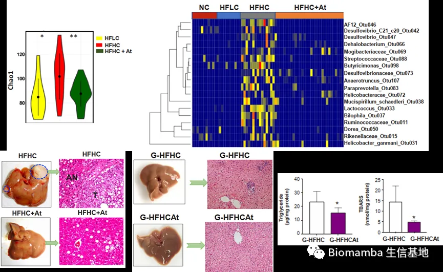
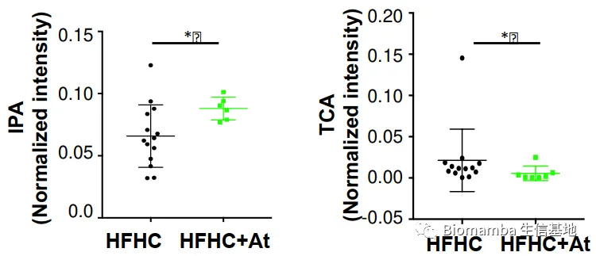
Introspection & Reflection
********●1 本文首次阐述了胆固醇的长期摄入将加重高脂饮食诱导的肝脏病变，并发现肠道菌群在NAFLD-HCC发展进程中的关键作用。功能预测的结果显示胆固醇可能抑制了菌群的色氨酸代谢，下一步可能需要通过宏基因组和宏蛋白组手段确认胆固醇影响了哪些基因的变化。
****************************************************●**************2 **************************本文发现了胆固醇可能增加了 Helicobacter ganmani、Mucispirillum schaedleri 等微生物的丰度，这与Qian等人的发现较为一致。维也纳大学的一项研究显示， M. schaedleri 与 H. hepaticus （与 H. ganmani 基因组高度相似的物种）之间存在基因水平转移，这提示基因层面的变化可能较分类学层面的变化更为重要，菌群整体可能较某一两种特定微生物更为关键。
****************● 3 ****本文使用了阿托伐他汀干预NAFLD-HCC的进程，本文作者认为阿托伐他汀能够回复肠屏障的功能，同时可以在不影响胆固醇内源性合成的情况下抑制肝脏的脂质堆积和炎性浸润。由于口服阿托伐他汀的生物利用度约为 14% 左右，同时肠道菌群具有丰富的代谢酶，提示阿托伐他汀的这一作用可能与肠道菌群相关。这为探索新型药物的开发提供了新的思路。
参考文献
[1] Zhang X, Coker OO, Chu ES, et alDietary cholesterol drives fatty liver-associated liver cancer by modulating gut microbiota and metabolites. Gut;70:761-774. doi:10.1136/ gutjnl-2019-319664 (2021)
[2] Qian, M, Hu, H, Zhao, D, et al. Coordinated changes of gut microbiome and lipidome differentiates nonalcoholic steatohepatitis (NASH) from isolated steatosis. Liver Int. , 40: 622– 637. doi:10.1111/liv.14316 (2020)
[3] Loy, A. et al. Lifestyle and Horizontal Gene Transfer-Mediated Evolution of Mucispirillum schaedleri, a Core Member of the Murine Gut Microbiota. mSystems 2, e00171-00116, doi:10.1128/mSystems.00171-16(2017).
[4] Alsmadi, M.M., AL-Daoud, N.M., Obaidat, R.M. et al. Enhancing Atorvastatin In Vivo Oral Bioavailability in the Presence of Inflammatory Bowel Disease and Irritable Bowel Syndrome Using Supercritical Fluid Technology Guided by wbPBPK Modeling in Rat and Human. AAPS PharmSciTech 23, 148 , doi:10.1208/s12249-022-02302-z (2022)
如果大家在学习过程中遇到好文想要分享的，也欢迎联系我投稿。

如何联系我们
 公众号后台消息更新不及时，超过48h便不允许回复读者消息，这里给大家留一下领取资料、免费服务(有root权限的共享服务器,你没有体验过的全新版本!)的微信号 ，方便各位随时交流、提建议(科研任务繁重，回复不及时请见谅)。此外呼声一直很高的交流群 也建好了，欢迎大家入群讨论：永久免费的千人生信、科研交流群
公众号后台消息更新不及时，超过48h便不允许回复读者消息，这里给大家留一下领取资料、免费服务(有root权限的共享服务器,你没有体验过的全新版本!)的微信号 ，方便各位随时交流、提建议(科研任务繁重，回复不及时请见谅)。此外呼声一直很高的交流群 也建好了，欢迎大家入群讨论：永久免费的千人生信、科研交流群
大家可以阅读完这几篇之后添加给生信入门初学者的小贴士 如何搜索公众号过往发布内容

 您点的每个赞和在看，我都认真当成了喜欢
您点的每个赞和在看，我都认真当成了喜欢